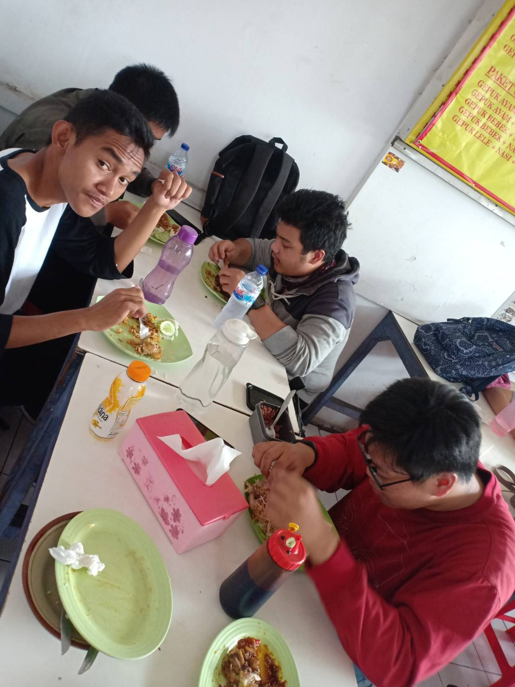

I’m a food lover, number cruncher, and meticulous budgeter. I love science and art, and the way they come together when I cook. I love to create, problem solve, and learn new things. Making great food is my passion, my purpose, and my favorite thing to share with others. Want to learn with me?
QUICK INFO:
Location: Nashville, TN
Age: old enough to remember life before Facebook. Adult life.
Education: B.S. Nutritional Science, Louisiana State University, 2007; B.S. Clinical Laboratory Science, Louisiana State University, 2011
Years Blogging: 11
What did you do before blogging: Microbiologist
Zodiac Sign: Scorpio
Favorite Charity: Feeding America
Savory or Sweet: SAVORY
Pie or Cake: Pie (the pizza kind)
Food Philosophy: Everything in moderation and KEEP IT SIMPLE.
Publications: Budget Bytes: Over 100 Easy, Delicious Recipes to Slash Your Grocery Bill in Half
MY STORY
I started Budget Bytes in 2009, at a point when I felt like I was losing the battle with adulthood. I had recently graduated from college, my student loans had gone into repayment, but I was working a low wage job and was barely able to make ends meet. I had already cut all discretionary spending from my budget, so the only place left to cut was food. Frustrated and unwilling to eat ramen noodles every day, I started tracking every penny that I spent on food to see if there were any small corners that could be cut. And that’s when everything changed.
The simple act of tracking my food costs was transformative. With all the data in front of me I was able to see where my money was being wasted and where I was was getting the most value. I began planning my meals and grocery lists around the budget savers and avoiding the budget sinkers. I started experimenting with new recipes, discovering new foods, and finding new ways to keep my stomach satisfied while still spending less. And that’s when Budget Bytes was born.
I didn’t think anyone would ever see the blog, but it was a fun project and a great way to document my recipes and progress. What I didn’t know at the time was how many other people were dealing with the same budget issues, and how many more people needed to learn basic cooking skills. When the enormity of these two things hit me, Budget Bytes stopped being just a hobby and became my mission.

Budget Bytes has been going strong for almost ten years and has never stopped growing! Since starting the blog, I’ve gone back to school for a second degree, published a cookbook, developed a Budget Bytes mobile app, and expanded the Budget Bytes website and team. I never could have imagined that life could be this amazing. Every day I’m overwhelmed with gratitude for having the opportunity to use my creativity in a way that makes a positive impact on the lives of others. I am the luckiest woman alive.
Thanks for stopping by!